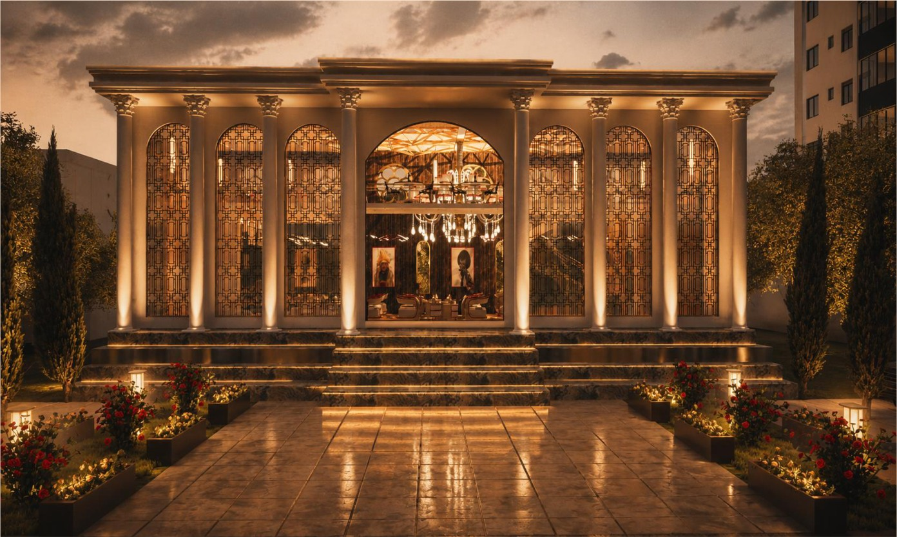
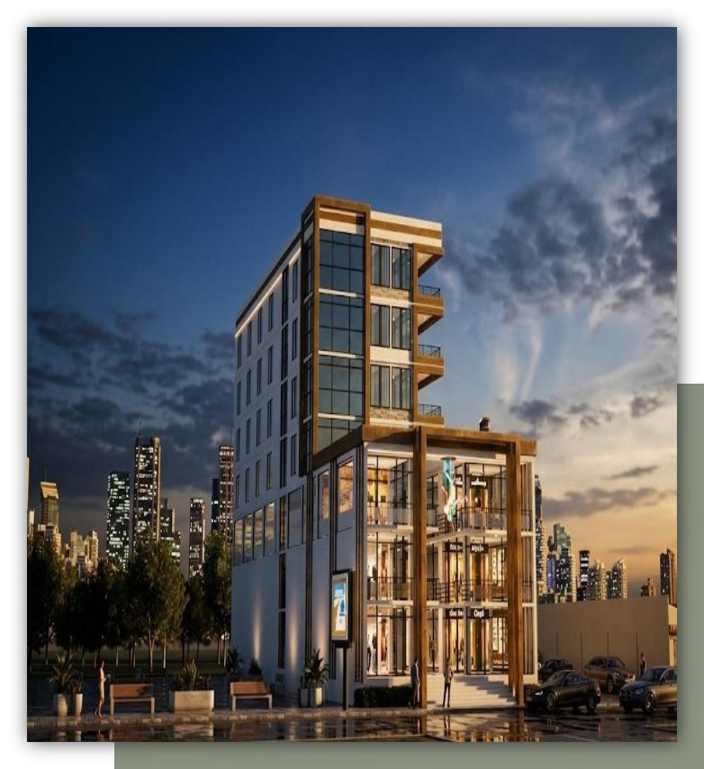
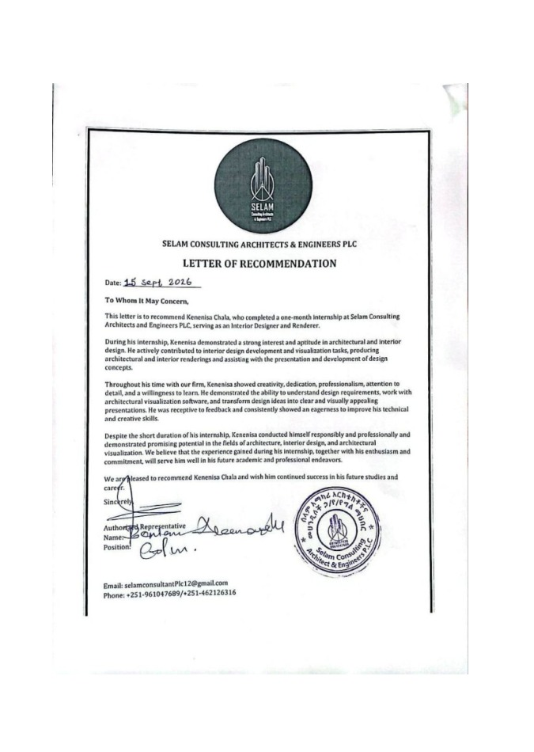

Spaces with
purpose.
Made human.
I’m Kenenisa Chala — an aspiring architect exploring how thoughtful planning, material, light and visual storytelling can shape the way people experience a space. This portfolio brings together selected architectural concepts, interior work and visualisation.


01 / FORM & CONTEXT
Ideas, drawn into space.
Explore each project as its own story. Open a project to move through its concept, design imagery and available technical material.
Learning through practice.
Selected work from my internship at Selam Architectural and Engineering Consultant PLC. My contribution included rendering, interior design and finishing.
Kenenisa Chala
Architecture / 2026
Curious by nature.
Architectural by instinct.
My interest in architecture began with a simple fascination: how can a drawing become a place that people remember? Since then, I have worked to turn that curiosity into a growing set of skills — from perspective sketching and spatial planning to 3D modelling, rendering and interior presentation.
I have taught myself tools including Revit, SketchUp and Twinmotion through independent practice and online learning, and built a portfolio to document how my thinking is developing. During my internship at Selam Architectural and Engineering Consultant PLC in Hawassa, I gained exposure to professional project workflows and contributed to rendering, interior design and finishing.
I am now beginning my university journey at Addis Ababa University while continuing to refine my design eye. I am especially interested in minimalism, sustainable thinking, context-sensitive design and spaces that feel as considered as they look. I see this portfolio not as a finished statement, but as evidence of commitment, curiosity and the work I am ready to do next.
Beyond software, I value patience, observation, iteration and the willingness to learn from critique. My goal is to develop into an architect who can connect creative ideas with clear architectural communication — from concept and plan to atmosphere and detail.
Human-centred
Design starts with the people who will use and inhabit a space.
Context-aware
Light, landscape, culture and local character inform decisions.
Purposeful simplicity
Clarity comes from meaningful choices, not unnecessary complexity.

Work speaks.
People remember.
My internship at Selam gave me the opportunity to contribute to visualisation and interior-focused work within a professional setting. The recommendation letter below is presented as a dedicated part of my portfolio, alongside my supporting certificates.
Documents are kept in one place for reviewers who want to understand my experience and development beyond the project imagery.
Let’s make
something meaningful.
For university applications, academic opportunities, collaborations or questions about my work, I would be glad to connect.